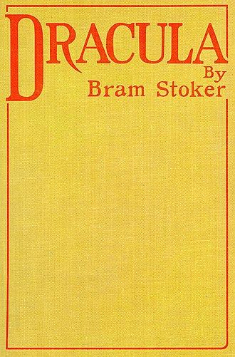

Dracula is a novel by Bram Stoker, published in 1897. An epistolary novel, the narrative is related through letters, diary entries, and newspaper articles. It has no single protagonist and opens with solicitor Jonathan Harker taking a business trip to stay at the castle of a Transylvanian nobleman, Count Dracula. Harker escapes the castle after discovering that Dracula is a vampire, and the Count moves to England and plagues the seaside town of Whitby. A small group, led by Abraham Van Helsing, investigate, hunt and kill Dracula. 
Book Cover of Dracula
More on ...
Dracula was mostly written in the 1890s. Stoker produced over a hundred pages of notes for the novel, drawing extensively from Transylvanian folklore and history. Some scholars have suggested that the character of Dracula was inspired by historical figures like the Wallachian prince Vlad the Impaler or the countess Elizabeth Báthory, but there is widespread disagreement. Stoker's notes mention neither figure. He found the name Dracula in Whitby's public library while on holiday, thinking it meant devil in Romanian.
Some in formation about other books and their authors :